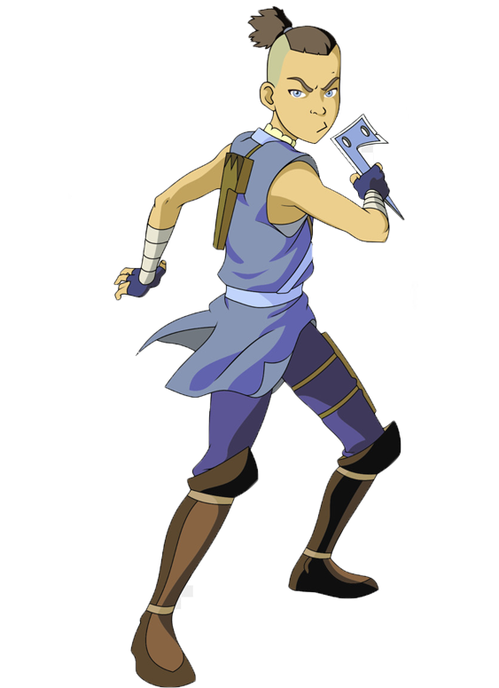

5 Series recomendadas
Breaking Bad
Sinopsis
El profesor calmado de química de una secundaria, Walter White cree que su vida no puede ser peor. Su salario apenas le alcanza para sostener a su familia, una situación que no mejora cuando su esposa da a luz y su hijo adolescente sufre de parálisis cerebral, pero Walter queda anonadado cuando se entera que tiene un cáncer terminal. Al concluir que su enfermedad iba a arruinar financieramente a su familia, él toma una decisión desesperada con el fin de ganar más dinero durante el tiempo que le queda y transforma un viejo vehículo de recreación en un laboratorio de matanfetaminas sobre ruedas.

Personajes
.Walter White(Bryan Cranston)

.Jesse Pinkman(Aaron Paul)

.Skyler White(Anna Gunn)

.Hank Schrader(Dean Norris)

.Walter White Jr(RJ Mitte)

.Saul Goodman(Bob Odenkirk)

.Marie Schrader(Betsy Brandt)

The Boys
Sinopsis
El protagonista es Hughie Campbell, un joven común y corriente cuya vida cambia para siempre cuando su novia es brutalmente asesinada por un superhéroe llamado A-Train. Hughie es reclutado por Billy Butcher, un enigmático ex-agente de la CIA, para unirse a un grupo de vigilantes conocidos como "The Boys", cuyo objetivo es exponer y derribar a los superhéroes corruptos. A medida que Hughie se une a The Boys, descubre que los superhéroes son una fachada para ocultar sus oscuras acciones detrás de las cámaras. El grupo se enfrenta a Los Siete, un equipo de superhéroes de élite liderado por el egocéntrico y poderoso Homelander. En su lucha contra los superhéroes, The Boys también se enredan en una trama de conspiración corporativa y gubernamental que involucra a la poderosa corporación Vought International, que controla y monetiza a los superhéroes.

Personajes
.Homelander(Antony Starr)
.Billy Butcher(Karl Urban)

.Hughie Campbell(Jack Quaid)

.Annie January(Erin Moriarty)

.Soldier Boy(Jensen Ackles)

Dragon Ball Z
Sinopsis
La trama se desarrolla varios años después de los eventos de "Dragon Ball", con Goku ahora siendo un adulto y enfrentándose a enemigos cada vez más poderosos. Junto a su hijo Gohan y otros aliados, Goku se enfrenta a una serie de villanos, incluyendo a saiyajins renegados, poderosos androides, seres extraterrestres y dioses destructores. A lo largo de la serie, Goku y sus amigos participan en intensas batallas con habilidades de lucha épicas, utilizando técnicas de artes marciales y poderes especiales para enfrentarse a enemigos formidables. La trama también explora la relación de Goku con su familia, sus lazos de amistad y la búsqueda constante de superación y poder.

Personajes
.Goku

.Vegeta
.Gohan

.Picoro

.Frezzer
Avatar la leyenda de Aang
Sinopsis
La historia comienza con Aang, un niño de 12 años y último sobreviviente de los Nómadas del Aire, que descubre que es el Avatar después de haber estado congelado en un iceberg durante 100 años. Aang despierta en un mundo donde la Nación del Fuego ha llevado a cabo una guerra brutal para conquistar y dominar a las otras tres naciones. Acompañado de sus nuevos amigos, Katara y Sokka, Aang emprende una emocionante aventura para dominar los elementos restantes y derrotar a la Nación del Fuego. Sin embargo, el príncipe Zuko de la Nación del Fuego está decidido a capturar al Avatar y recuperar su honor, lo que lo convierte en el principal antagonista de la historia.
Personajes
.Aang

.Katara

.Sokka
.Toph

.Zuko
Emilia ClarkeGame of Thrones
Sinopsis
La historia sigue a un amplio elenco de personajes, incluyendo nobles, reyes, reinas, bastardos, guerreros, intrigantes y criaturas fantásticas. La trama se centra en la intrincada política, las alianzas cambiantes y las violentas luchas por el poder entre las diversas casas nobles, mientras se enfrentan a amenazas externas como los caminantes blancos, una raza de seres sobrenaturales que amenazan con destruir todo en su camino. A lo largo de la serie, se exploran temas complejos como la traición, la lealtad, la moralidad, la venganza y la supervivencia en un mundo brutal y despiadado. Los personajes luchan por sus ambiciones, enfrentándose a difíciles decisiones y consecuencias, mientras tratan de asegurar su posición en el juego de tronos y ganar el control del reino.

Personajes
.Daenerys Targaryen(Emilia Clarke)

.Oberyn Martell(Pedro Pascal)

.Lyanna Mormont()Bella Ramsey

Sansa Stark(Sophie Turner)

Arya Stark(Maisie Williams)